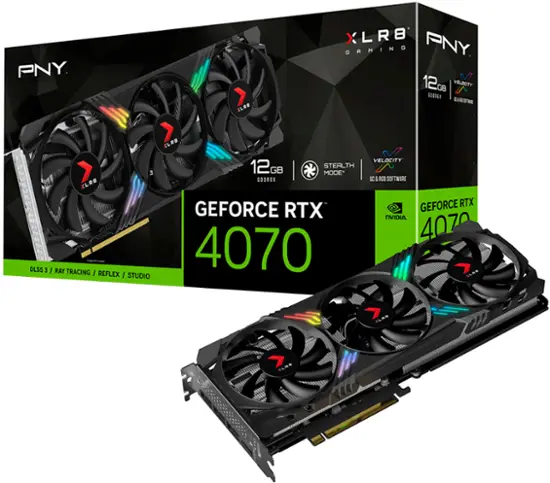
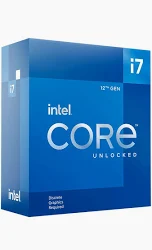
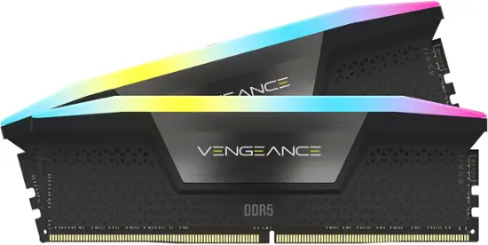
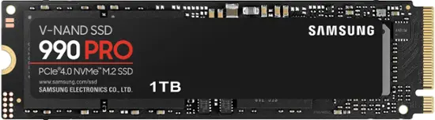
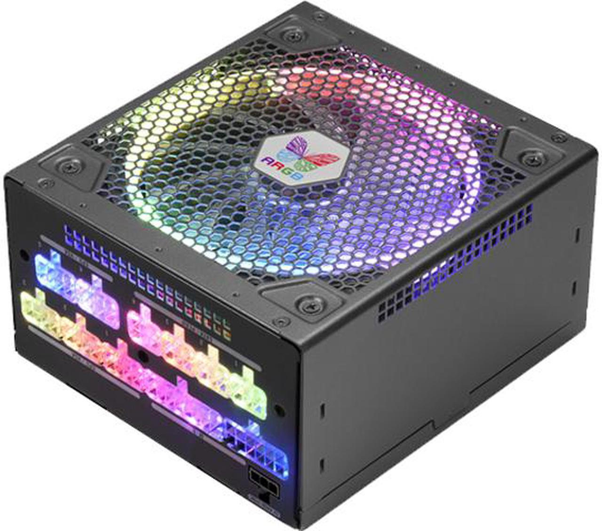
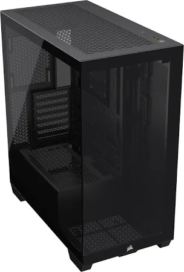

Main Page Info & Analytics Reviews About
Internal Hardware
One of the best ways to understand what internal hardware is, is compare it to external hardware.
The external focuses on the main monitor, keyboard, printer or scanner. The internal hardware works with
a separate case that holds all the components inside. These components are what runs everything that is displayed
on the monitor! Make sense? Well it's a bit more complicated than that.
The internal hardware is compiled of many different parts, including the Graphics Card, CPU, Memory, SSD, PSU,
and the case that holds it all.
Below are a handful of examples
Graphics Card

Nvidia RTX 4070 - $589.99
A computer component that generates images, videos, and 3D graphics for a display.
Central Processing Unit (CPU)

Intel Gen Core i7 12th Gen - $212.57
the primary component of a computer that acts as its brain,
controlling other components and performing calculations.
Memory

CORSAIR - VENGEANCE RGB 32GB (2x16GB) DDR5 6000MHz C36 UDIMM Desktop Memory - $97.99
Memory refers to the location of short-term data,
while storage refers to the location of data stored on a long-term basis.
Solid State Drive (SSD)

Samsung - 990 PRO 1TB Internal SSD PCle Gen 4x4 NVMe - $99.99
A solid-state drive (SSD) is a semiconductor-based storage device,
which typically uses NAND flash memory to save persistent data.
Solid-state technology is transforming the storage with high speed flash memory.
Power Supply Unit (PSU)

Super Flower Leadex III ARGB 750W 80+ Gold, 10 Years Warranty,
Addressable LEDs With 5V Motherboard Sync/Analog Controlled,
ECO Fanless & Silent Mode, Full Modular Power Supply, SF-750F14RG - $89.99
A vital component of any electronic device that converts alternating current (AC)
from a wall outlet into direct current (DC) for the device's internal components.
PC Case

SAMSUNG 34" Odyssey G55T WQHD 165Hz 1ms(MPRT) HDR Curved Gaming Monitor - $229.00
The physical enclosure that houses and protects a computer's internal components.
Each of these components are examples of what could be purchased for a PC.
Although, there are plenty of options to choose from!
If you're planning to build your own PC, it's reccomended to do your research
to find what best meets all your needs!
If you don't plan on building a PC, you can always purchase a pre-built option!
Some examples of prebuilt PC's are below, aswell as the most popular options!
Analytics
Click on the link below for the chart!